Change analysis for Zimbabwe for PRIMAP-hist v2.8_final compared to
v2.7_final
This changelog is published under the creative commons non-commercial
share alike license. For more information see creativecommons.org.
Overview over
emissions by sector and gas
The following figures show the aggregate national total emissions
excluding LULUCF AR6GWP100 for the country reported priority scenario.
The dotted lines show the v2.7_final data.
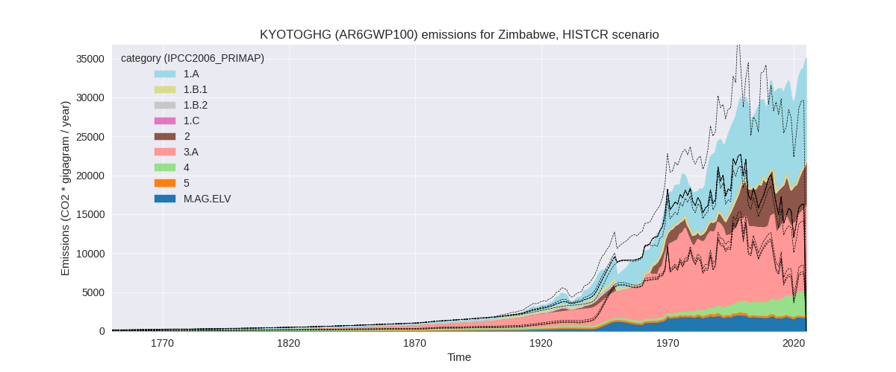
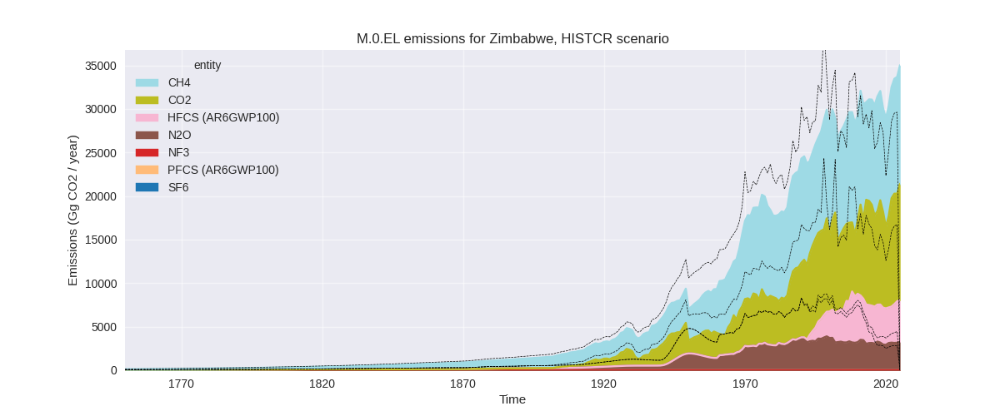
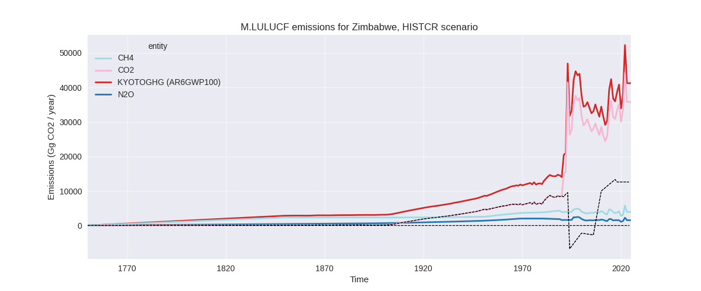
The following figures show the aggregate national total emissions
excluding LULUCF AR6GWP100 for the third party priority scenario. The
dotted lines show the v2.7_final data.
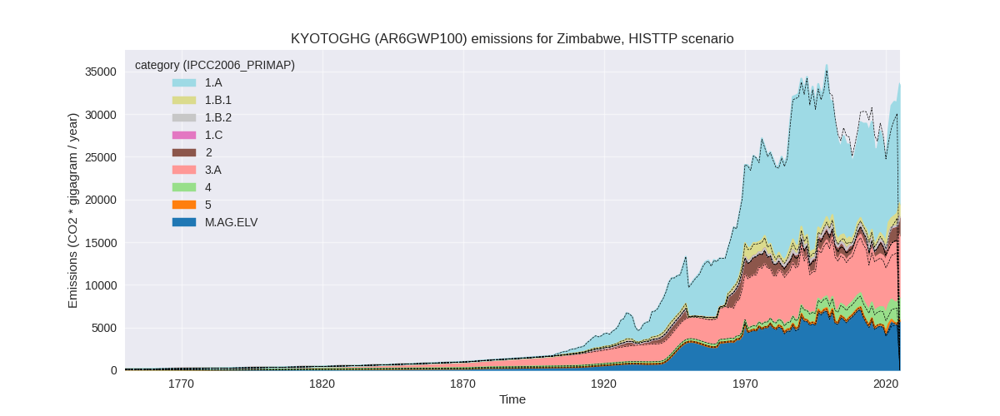
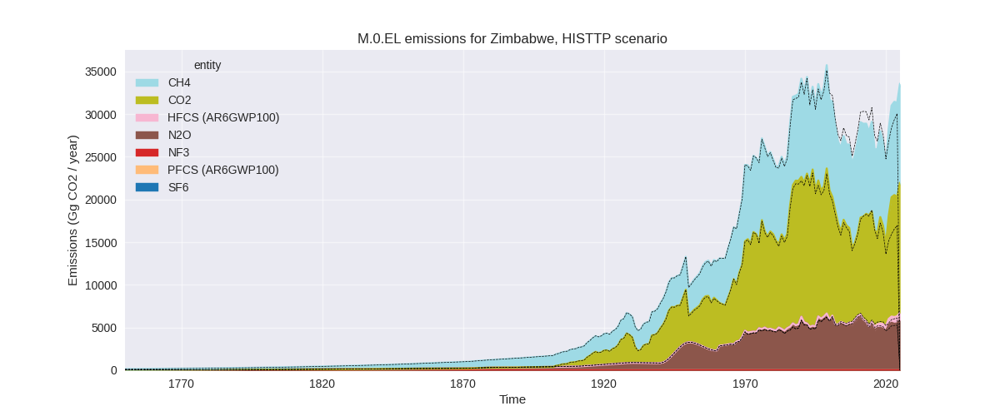
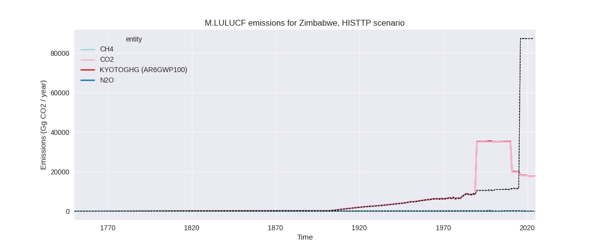
Used country reported data
The changelog with this information is available upon request for
non-commercial customers. Paying commercial customers will be provided
with the information.
Overview over changes
In the country reported priority scenario we have the following
changes for aggregate Kyoto GHG and national total emissions excluding
LULUCF (M.0.EL):
- Emissions in 2024 have changed by 13.7%% (4055.84 Gg CO2 / year)
- Emissions in 1990-2024 have changed by -1.7%% (-506.62 Gg CO2 / year)
In the third party priority scenario we have the following changes
for aggregate Kyoto GHG and national total emissions excluding LULUCF
(M.0.EL):
- Emissions in 2024 have changed by 4.2%% (1266.24 Gg CO2 / year)
- Emissions in 1990-2024 have changed by -1.0%% (-305.14 Gg CO2 / year)
Most
important changes per scenario and time frame
In the country reported priority scenario the
following sector-gas combinations have the highest absolute impact on
national total KyotoGHG (AR6GWP100) emissions in 2024
(up to 10 with either at least 0.2% impact on total emissions or at
least 20% change):
- 1: M.AG.ELV, CH4 with -5144.53 Gg CO2 / year (-99.7%, -17.4%)
- 2: 3.A, CH4 with 4106.80 Gg CO2 / year (72.0%, 13.9%)
- 3: 2, HFCS (AR6GWP100) with 3145.45 Gg CO2 / year (194.6%, 10.6%)
- 4: 4, CH4 with 1422.47 Gg CO2 / year (178.2%, 4.8%)
- 5: 1.A, CO2 with -834.88 Gg CO2 / year (-7.1%, -2.8%)
- 6: 4, CO2 with 724.83 Gg CO2 / year (63590.6%, 2.4%)
- 7: 3.A, N2O with 704.63 Gg CO2 / year (2671.6%, 2.4%)
- 8: M.AG.ELV, N2O with -548.21 Gg CO2 / year (-25.8%, -1.9%)
- 9: 2, CO2 with 218.10 Gg CO2 / year (50.3%, 0.7%)
- 10: 4, N2O with 198.29 Gg CO2 / year (476.9%, 0.7%)
In the country reported priority scenario the
following sector-gas combinations have the highest absolute impact on
national total KyotoGHG (AR6GWP100) emissions in
1990-2024 (up to 10 with either at least 0.1% impact on
total emissions or at least 10% change):
- 1: M.AG.ELV, CH4 with -4703.91 Gg CO2 / year (-99.3%, -16.0%)
- 2: 3.A, CH4 with 3614.48 Gg CO2 / year (65.5%, 12.3%)
- 3: M.AG.ELV, N2O with -3399.22 Gg CO2 / year (-68.1%, -11.5%)
- 4: 2, HFCS (AR6GWP100) with 2844.89 Gg CO2 / year (440.3%, 9.7%)
- 5: 1.A, CO2 with -906.96 Gg CO2 / year (-9.2%, -3.1%)
- 6: 4, CH4 with 767.85 Gg CO2 / year (110.9%, 2.6%)
- 7: 3.A, N2O with 641.11 Gg CO2 / year (1074.1%, 2.2%)
- 8: 4, CO2 with 288.21 Gg CO2 / year (42667.6%, 1.0%)
- 9: 4, N2O with 120.11 Gg CO2 / year (318.8%, 0.4%)
- 10: 2, N2O with 110.03 Gg CO2 / year (53.2%, 0.4%)
In the third party priority scenario the following
sector-gas combinations have the highest absolute impact on national
total KyotoGHG (AR6GWP100) emissions in 2024 (up to 10
with either at least 0.2% impact on total emissions or at least 20%
change):
- 1: 1.A, CO2 with 2765.82 Gg CO2 / year (31.0%, 9.2%)
- 2: 1.A, CH4 with -1811.72 Gg CO2 / year (-62.8%, -6.0%)
- 3: 4, CO2 with 724.83 Gg CO2 / year (63590.6%, 2.4%)
- 4: 1.B.1, CO2 with -716.14 Gg CO2 / year (-56.0%, -2.4%)
- 5: 3.A, CH4 with 506.45 Gg CO2 / year (7.9%, 1.7%)
- 6: 2, CO2 with 460.43 Gg CO2 / year (89.3%, 1.5%)
- 7: 1.B.1, CH4 with -433.89 Gg CO2 / year (-34.1%, -1.4%)
- 8: M.AG.ELV, CH4 with -427.84 Gg CO2 / year (-44.8%, -1.4%)
- 9: M.AG.ELV, N2O with 422.31 Gg CO2 / year (10.0%, 1.4%)
- 10: 1.A, N2O with -208.96 Gg CO2 / year (-47.5%, -0.7%)
In the third party priority scenario the following
sector-gas combinations have the highest absolute impact on national
total KyotoGHG (AR6GWP100) emissions in 1990-2024 (up
to 10 with either at least 0.1% impact on total emissions or at least
10% change):
- 1: 1.A, CH4 with -1042.17 Gg CO2 / year (-45.9%, -3.5%)
- 2: 1.A, CO2 with 388.82 Gg CO2 / year (3.4%, 1.3%)
- 3: 4, CO2 with 288.21 Gg CO2 / year (42667.6%, 1.0%)
- 4: 1.A, N2O with -134.35 Gg CO2 / year (-35.3%, -0.5%)
- 5: 2, N2O with 110.03 Gg CO2 / year (53.2%, 0.4%)
- 6: 2, CO2 with 72.56 Gg CO2 / year (9.3%, 0.2%)
- 7: M.AG.ELV, N2O with 62.25 Gg CO2 / year (1.4%, 0.2%)
- 8: 1.B.1, CO2 with -46.72 Gg CO2 / year (-18.1%, -0.2%)
- 9: 3.A, CH4 with 42.34 Gg CO2 / year (0.7%, 0.1%)
- 10: 1.B.1, CH4 with -35.65 Gg CO2 / year (-4.8%, -0.1%)
Notes on data changes
The changelog with this information is available upon request for
non-commercial customers. Paying commercial customers will be provided
with the information.
Changes by sector and gas
For each scenario and time frame the changes are displayed for all
individual sectors and all individual gases. In the sector plot we use
aggregate Kyoto GHGs in AR6GWP100. In the gas plot we usenational total
emissions without LULUCF.
country reported scenario
2024
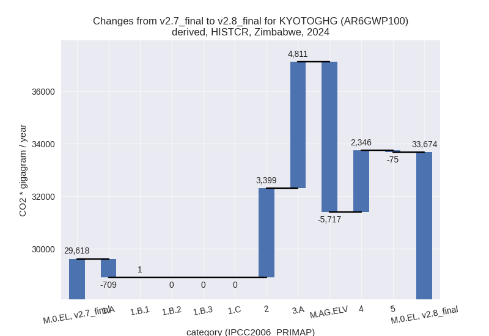
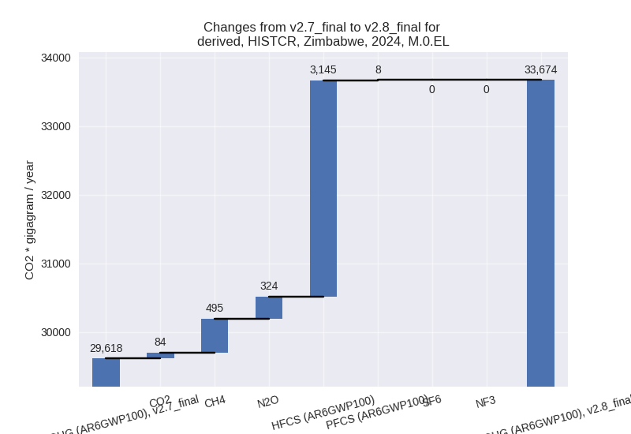
1990-2024
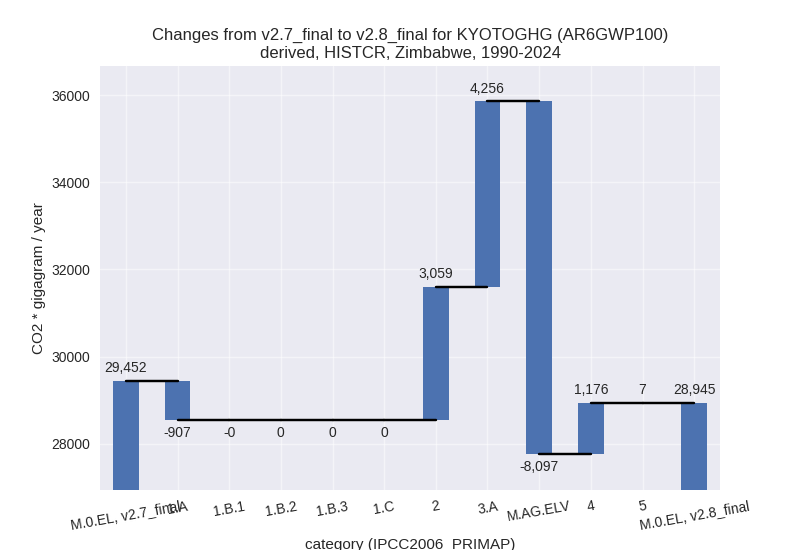
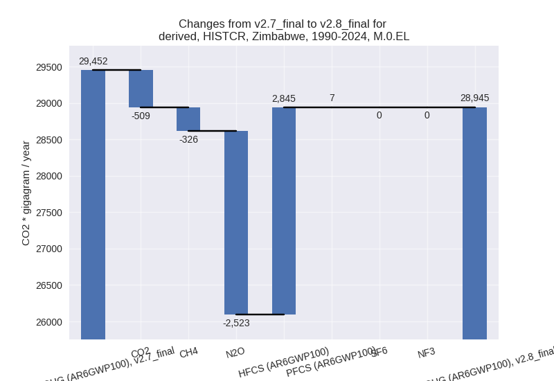
third party scenario
2024
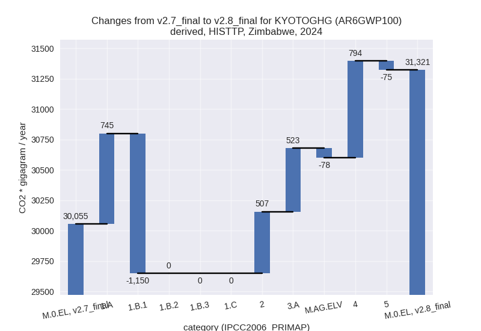
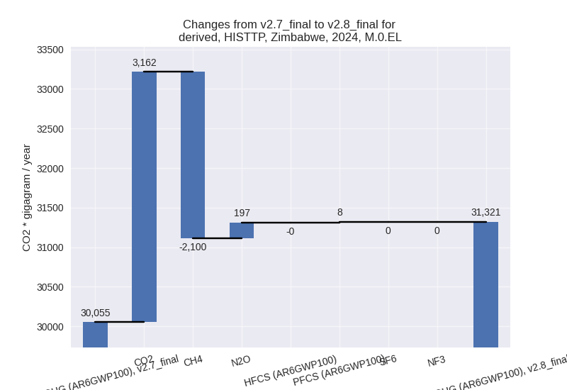
1990-2024
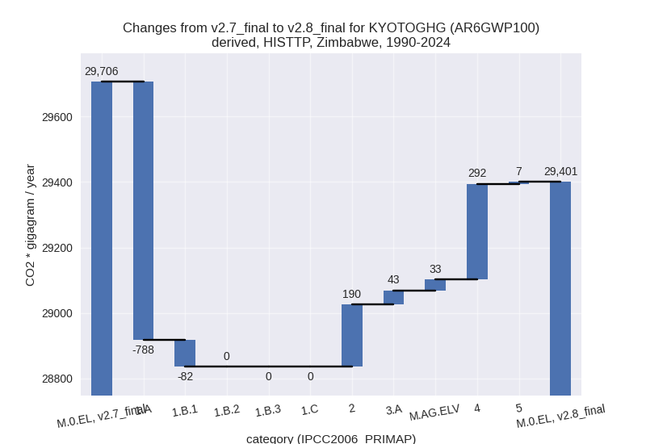
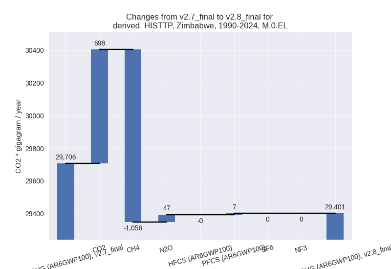
Detailed changes for the
scenarios:
country reported scenario
(HISTCR):
Most important changes
per time frame
For 2024 the following sector-gas combinations have
the highest absolute impact on national total KyotoGHG (AR6GWP100)
emissions in 2024 (up to 20 with either at least 0.2%
impact on total emissions or at least 20% change):
- 1: M.AG.ELV, CH4 with -5144.53 Gg CO2 / year (-99.7%), -17.4%)
- 2: 3.A, CH4 with 4106.80 Gg CO2 / year (72.0%), 13.9%)
- 3: 2, HFCS (AR6GWP100) with 3145.45 Gg CO2 / year (194.6%), 10.6%)
- 4: 4, CH4 with 1422.47 Gg CO2 / year (178.2%), 4.8%)
- 5: 1.A, CO2 with -834.88 Gg CO2 / year (-7.1%), -2.8%)
- 6: 4, CO2 with 724.83 Gg CO2 / year (63590.6%), 2.4%)
- 7: 3.A, N2O with 704.63 Gg CO2 / year (2671.6%), 2.4%)
- 8: M.AG.ELV, N2O with -548.21 Gg CO2 / year (-25.8%), -1.9%)
- 9: 2, CO2 with 218.10 Gg CO2 / year (50.3%), 0.7%)
- 10: 4, N2O with 198.29 Gg CO2 / year (476.9%), 0.7%)
- 11: 1.A, CH4 with 110.88 Gg CO2 / year (9.0%), 0.4%)
- 12: 5, N2O with -74.83 Gg CO2 / year (-28.6%), -0.3%)
- 13: 2, N2O with 29.25 Gg CO2 / year (27.7%), 0.1%)
- 14: M.AG.ELV, CO2 with -24.23 Gg CO2 / year (-70.1%), -0.1%)
- 15: 2, PFCS (AR6GWP100) with 7.66 Gg CO2 / year (inf%), 0.0%)
- 16: 2, CH4 with -1.93 Gg CO2 / year (-100.0%), -0.0%)
- 17: 1.B.1, CO2 with -0.02 Gg CO2 / year (-30.3%), -0.0%)
For 1990-2024 the following sector-gas combinations
have the highest absolute impact on national total KyotoGHG (AR6GWP100)
emissions in 1990-2024 (up to 20 with either at least
0.1% impact on total emissions or at least 10% change):
- 1: M.AG.ELV, CH4 with -4703.91 Gg CO2 / year (-99.3%), -16.0%)
- 2: 3.A, CH4 with 3614.48 Gg CO2 / year (65.5%), 12.3%)
- 3: M.AG.ELV, N2O with -3399.22 Gg CO2 / year (-68.1%), -11.5%)
- 4: 2, HFCS (AR6GWP100) with 2844.89 Gg CO2 / year (440.3%), 9.7%)
- 5: 1.A, CO2 with -906.96 Gg CO2 / year (-9.2%), -3.1%)
- 6: 4, CH4 with 767.85 Gg CO2 / year (110.9%), 2.6%)
- 7: 3.A, N2O with 641.11 Gg CO2 / year (1074.1%), 2.2%)
- 8: 4, CO2 with 288.21 Gg CO2 / year (42667.6%), 1.0%)
- 9: 4, N2O with 120.11 Gg CO2 / year (318.8%), 0.4%)
- 10: 2, N2O with 110.03 Gg CO2 / year (53.2%), 0.4%)
- 11: 2, CO2 with 103.48 Gg CO2 / year (16.5%), 0.4%)
- 12: 2, PFCS (AR6GWP100) with 6.77 Gg CO2 / year (inf%), 0.0%)
- 13: 2, CH4 with -6.17 Gg CO2 / year (-98.6%), -0.0%)
- 14: M.AG.ELV, CO2 with 5.94 Gg CO2 / year (25.7%), 0.0%)
- 15: 1.B.1, CO2 with -0.00 Gg CO2 / year (-32.7%), -0.0%)
Changes in the main sectors for aggregate KyotoGHG (AR6GWP100)
are
- 1: Total sectoral emissions in 2022 are 12781.15 Gg
CO2 / year which is 39.3% of M.0.EL emissions. 2024 Emissions have
changed by -5.3% (-707.93 Gg CO2 /
year). 1990-2024 Emissions have changed by -7.8% (-907.10 Gg CO2 / year). For 2024
the changes per gas
are:
For 1990-2024 the changes per gas
are:
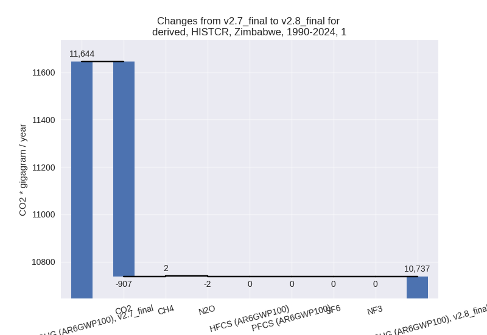
The changes come from the following subsectors:
- 1.A: Total sectoral emissions in 2022 are 12768.69
Gg CO2 / year which is 99.9% of category 1 emissions. 2024 Emissions
have changed by -5.3% (-708.75 Gg
CO2 / year). 1990-2024 Emissions have changed by -7.8% (-907.09 Gg CO2 / year). For 2024
the changes per gas
are:
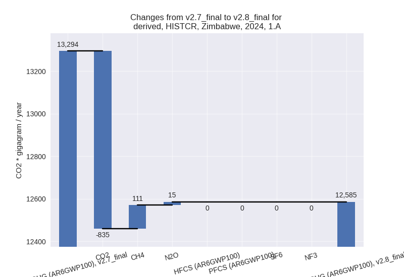
For 1990-2024 the changes per gas
are:
There is no subsector information available in PRIMAP-hist.
- 1.B.1: Total sectoral emissions in 2022 are 12.46
Gg CO2 / year which is 0.1% of category 1 emissions. 2024 Emissions have
changed by 5.3% (0.82 Gg CO2 /
year). 1990-2024 Emissions have changed by -0.1% (-0.01 Gg CO2 / year). For 2024 the
changes per gas
are:
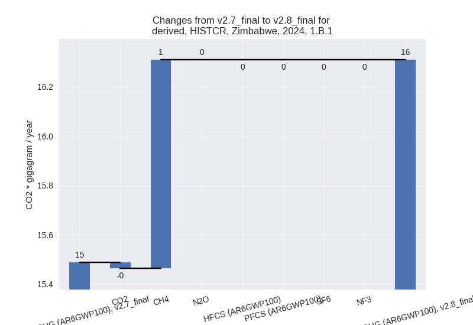
There is no subsector information available in PRIMAP-hist.
- 2: Total sectoral emissions in 2022 are 4893.82 Gg
CO2 / year which is 15.1% of M.0.EL emissions. 2024 Emissions have
changed by 157.5% (3398.53 Gg CO2 /
year). 1990-2024 Emissions have changed by 205.9% (3059.00 Gg CO2 / year). For 2024
the changes per gas
are:
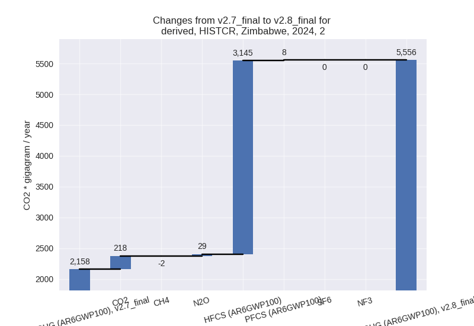
For 1990-2024 the changes per gas
are:
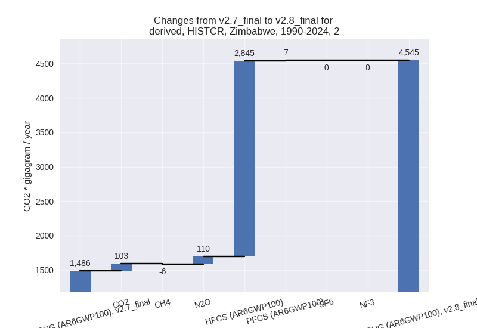
- M.AG: Total sectoral emissions in 2022 are 11576.99
Gg CO2 / year which is 35.6% of M.0.EL emissions. 2024 Emissions have
changed by -6.9% (-905.52 Gg CO2 /
year). 1990-2024 Emissions have changed by -25.1% (-3841.60 Gg CO2 / year). For 2024
the changes per gas
are:
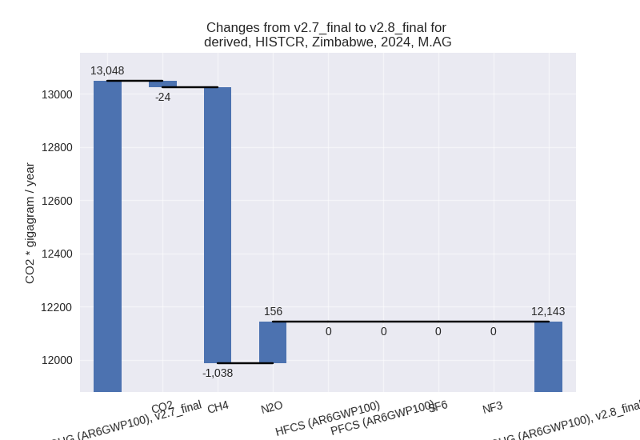
For 1990-2024 the changes per gas
are:
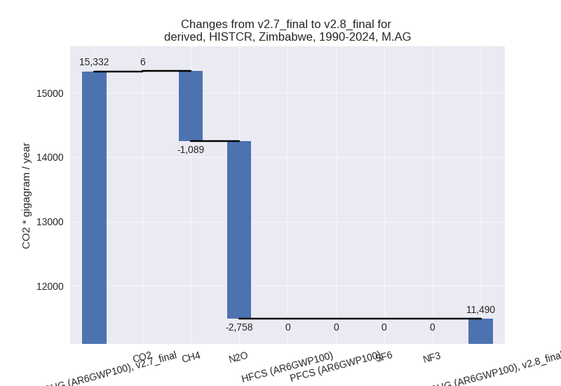
The changes come from the following subsectors:
- 3.A: Total sectoral emissions in 2022 are 9942.64
Gg CO2 / year which is 85.9% of category M.AG emissions. 2024 Emissions
have changed by 84.0% (4811.44 Gg
CO2 / year). 1990-2024 Emissions have changed by 76.2% (4255.59 Gg CO2 / year). For 2024
the changes per gas
are:
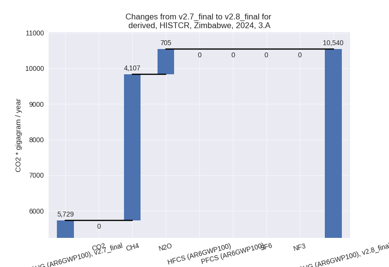
For 1990-2024 the changes per gas
are:
There is no subsector information available in PRIMAP-hist.
- M.AG.ELV: Total sectoral emissions in 2022 are
1634.35 Gg CO2 / year which is 14.1% of category M.AG emissions. 2024
Emissions have changed by -78.1%
(-5716.96 Gg CO2 / year). 1990-2024 Emissions have changed by -83.0% (-8097.19 Gg CO2 / year). For 2024
the changes per gas
are:
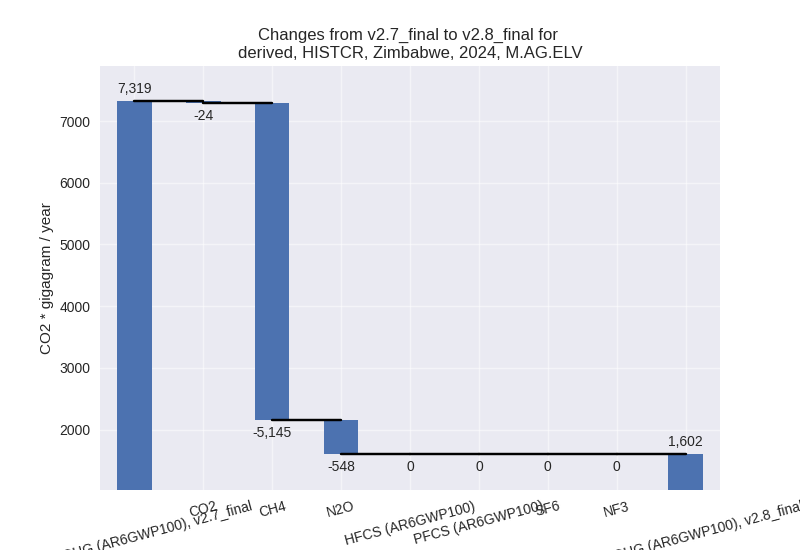
For 1990-2024 the changes per gas
are:
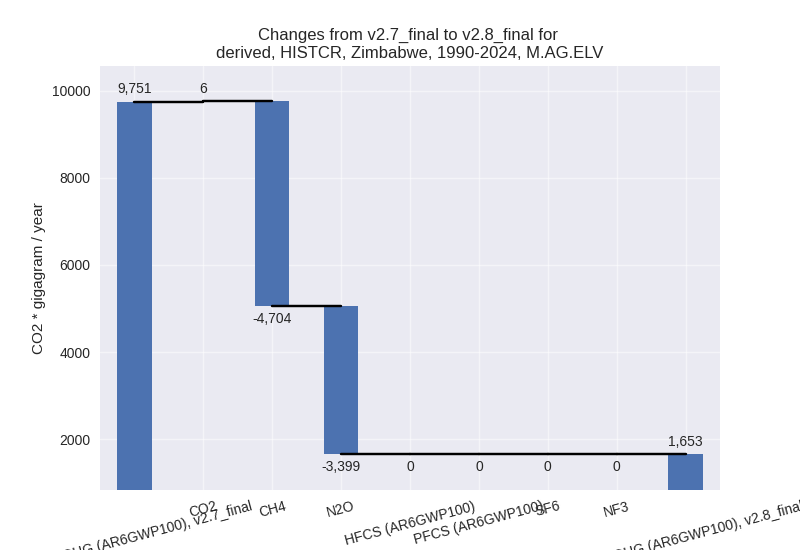
There is no subsector information available in PRIMAP-hist.
- 4: Total sectoral emissions in 2022 are 3019.70 Gg
CO2 / year which is 9.3% of M.0.EL emissions. 2024 Emissions have
changed by 278.9% (2345.60 Gg CO2 /
year). 1990-2024 Emissions have changed by 161.0% (1176.16 Gg CO2 / year). For 2024
the changes per gas
are:
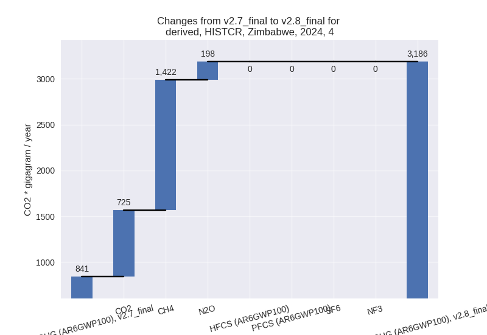
For 1990-2024 the changes per gas
are:
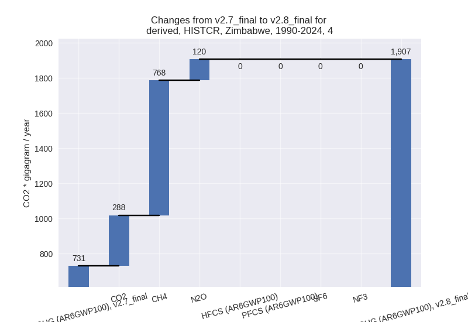
- 5: Total sectoral emissions in 2022 are 231.52 Gg
CO2 / year which is 0.7% of M.0.EL emissions. 2024 Emissions have
changed by -28.6% (-74.83 Gg CO2 /
year). 1990-2024 Emissions have changed by 2.7% (6.93 Gg CO2 / year). For 2024 the
changes per gas
are:
For 1990-2024 the changes per gas
are:
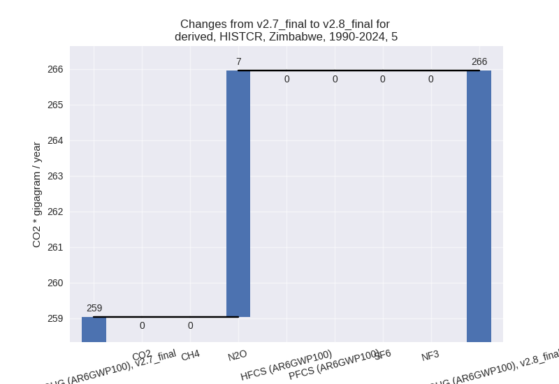
third party scenario (HISTTP):
Most important changes
per time frame
For 2024 the following sector-gas combinations have
the highest absolute impact on national total KyotoGHG (AR6GWP100)
emissions in 2024 (up to 20 with either at least 0.2%
impact on total emissions or at least 20% change):
- 1: 1.A, CO2 with 2765.82 Gg CO2 / year (31.0%), 9.2%)
- 2: 1.A, CH4 with -1811.72 Gg CO2 / year (-62.8%), -6.0%)
- 3: 4, CO2 with 724.83 Gg CO2 / year (63590.6%), 2.4%)
- 4: 1.B.1, CO2 with -716.14 Gg CO2 / year (-56.0%), -2.4%)
- 5: 3.A, CH4 with 506.45 Gg CO2 / year (7.9%), 1.7%)
- 6: 2, CO2 with 460.43 Gg CO2 / year (89.3%), 1.5%)
- 7: 1.B.1, CH4 with -433.89 Gg CO2 / year (-34.1%), -1.4%)
- 8: M.AG.ELV, CH4 with -427.84 Gg CO2 / year (-44.8%), -1.4%)
- 9: M.AG.ELV, N2O with 422.31 Gg CO2 / year (10.0%), 1.4%)
- 10: 1.A, N2O with -208.96 Gg CO2 / year (-47.5%), -0.7%)
- 11: 5, N2O with -74.83 Gg CO2 / year (-28.6%), -0.2%)
- 12: M.AG.ELV, CO2 with -72.82 Gg CO2 / year (-67.4%), -0.2%)
- 13: 2, N2O with 29.25 Gg CO2 / year (27.7%), 0.1%)
- 14: 3.A, N2O with 16.37 Gg CO2 / year (26.2%), 0.1%)
- 15: 2, CH4 with 10.19 Gg CO2 / year (527.0%), 0.0%)
- 16: 2, PFCS (AR6GWP100) with 7.66 Gg CO2 / year (inf%), 0.0%)
For 1990-2024 the following sector-gas combinations
have the highest absolute impact on national total KyotoGHG (AR6GWP100)
emissions in 1990-2024 (up to 20 with either at least
0.1% impact on total emissions or at least 10% change):
- 1: 1.A, CH4 with -1042.17 Gg CO2 / year (-45.9%), -3.5%)
- 2: 1.A, CO2 with 388.82 Gg CO2 / year (3.4%), 1.3%)
- 3: 4, CO2 with 288.21 Gg CO2 / year (42667.6%), 1.0%)
- 4: 1.A, N2O with -134.35 Gg CO2 / year (-35.3%), -0.5%)
- 5: 2, N2O with 110.03 Gg CO2 / year (53.2%), 0.4%)
- 6: 2, CO2 with 72.56 Gg CO2 / year (9.3%), 0.2%)
- 7: M.AG.ELV, N2O with 62.25 Gg CO2 / year (1.4%), 0.2%)
- 8: 1.B.1, CO2 with -46.72 Gg CO2 / year (-18.1%), -0.2%)
- 9: 3.A, CH4 with 42.34 Gg CO2 / year (0.7%), 0.1%)
- 10: 1.B.1, CH4 with -35.65 Gg CO2 / year (-4.8%), -0.1%)
- 11: 2, PFCS (AR6GWP100) with 6.77 Gg CO2 / year (inf%), 0.0%)
- 12: 2, CH4 with 0.90 Gg CO2 / year (14.4%), 0.0%)
Changes in the main sectors for aggregate KyotoGHG (AR6GWP100)
are
- 1: Total sectoral emissions in 2022 are 14268.75 Gg
CO2 / year which is 46.0% of M.0.EL emissions. 2024 Emissions have
changed by -2.7% (-404.68 Gg CO2 /
year). 1990-2024 Emissions have changed by -5.8% (-870.10 Gg CO2 / year). For 2024
the changes per gas
are:
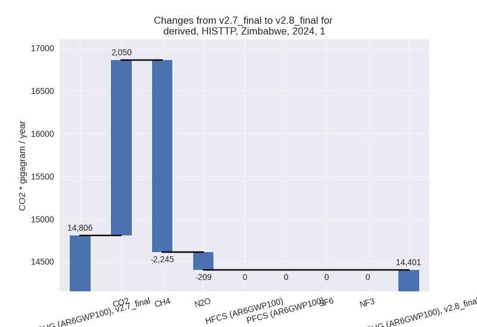
For 1990-2024 the changes per gas
are:
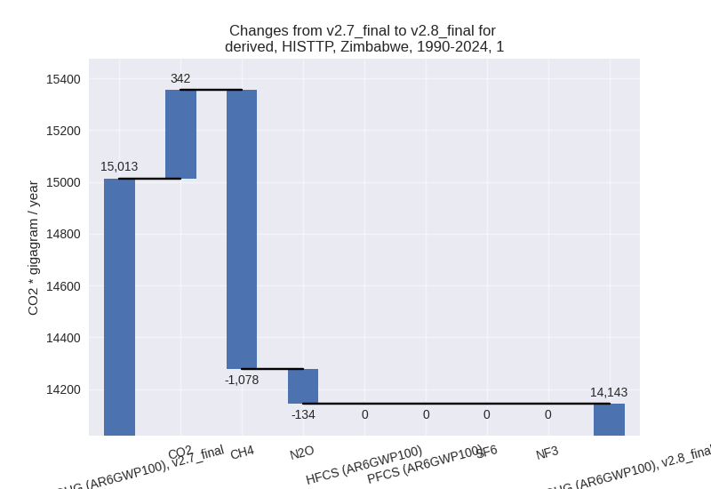
The changes come from the following subsectors:
- 1.A: Total sectoral emissions in 2022 are 13184.84
Gg CO2 / year which is 92.4% of category 1 emissions. 2024 Emissions
have changed by 6.1% (745.13 Gg CO2
/ year). 1990-2024 Emissions have changed by -5.6% (-787.71 Gg CO2 / year). For 2024
the changes per gas
are:
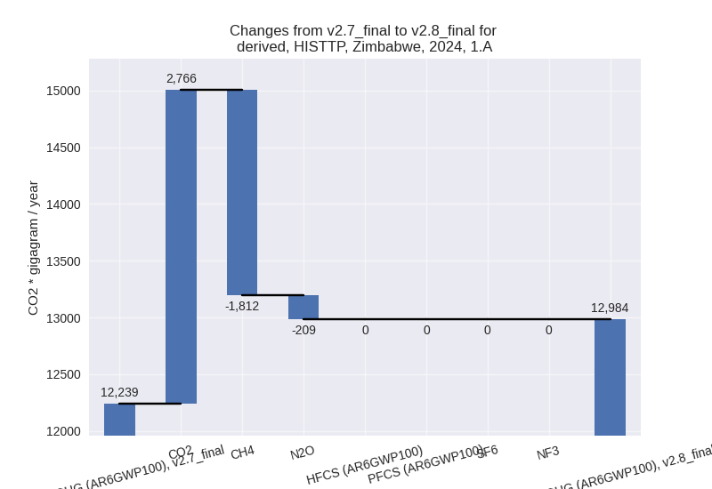
For 1990-2024 the changes per gas
are:
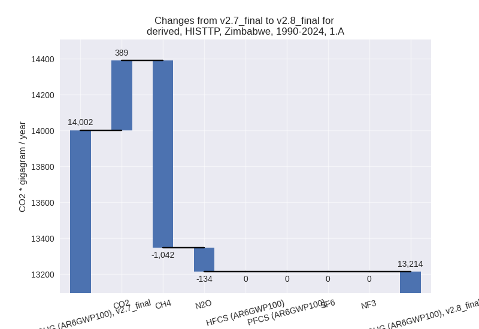
There is no subsector information available in PRIMAP-hist.
- 1.B.1: Total sectoral emissions in 2022 are 1068.70
Gg CO2 / year which is 7.5% of category 1 emissions. 2024 Emissions have
changed by -45.1% (-1149.95 Gg CO2 /
year). 1990-2024 Emissions have changed by -8.3% (-82.40 Gg CO2 / year). For 2024 the
changes per gas
are:
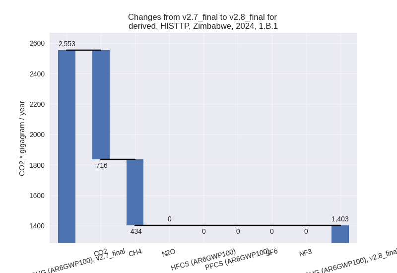
For 1990-2024 the changes per gas
are:
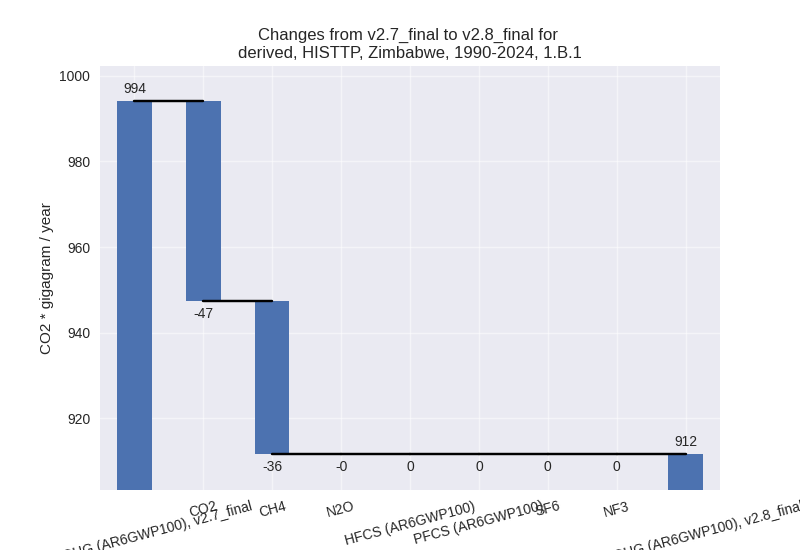
There is no subsector information available in PRIMAP-hist.
- 1.B.2: Total sectoral emissions in 2022 are 15.21
Gg CO2 / year which is 0.1% of category 1 emissions. 2024 Emissions have
changed by 1.0% (0.14 Gg CO2 /
year). 1990-2024 Emissions have changed by 0.1% (0.01 Gg CO2 / year).
- 2: Total sectoral emissions in 2022 are 1818.20 Gg
CO2 / year which is 5.9% of M.0.EL emissions. 2024 Emissions have
changed by 34.6% (507.17 Gg CO2 /
year). 1990-2024 Emissions have changed by 15.0% (190.26 Gg CO2 / year). For 2024 the
changes per gas
are:
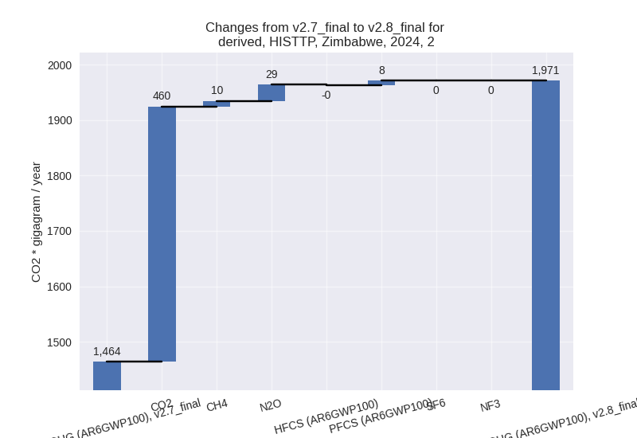
For 1990-2024 the changes per gas
are:
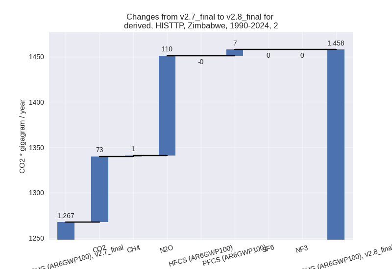
- M.AG: Total sectoral emissions in 2022 are 12304.15
Gg CO2 / year which is 39.7% of M.0.EL emissions. 2024 Emissions have
changed by 3.8% (444.48 Gg CO2 /
year). 1990-2024 Emissions have changed by 0.6% (76.15 Gg CO2 / year). For 2024 the
changes per gas
are:
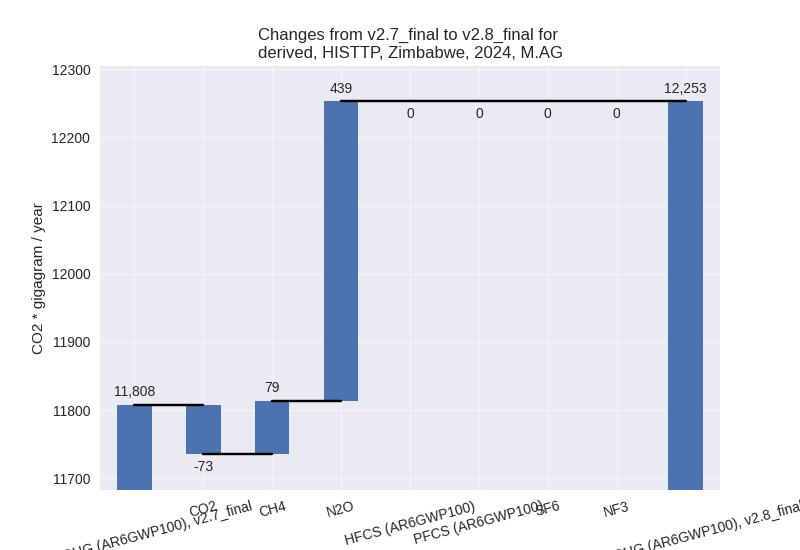
The changes come from the following subsectors:
- 3.A: Total sectoral emissions in 2022 are 6627.96
Gg CO2 / year which is 53.9% of category M.AG emissions. 2024 Emissions
have changed by 8.0% (522.83 Gg CO2
/ year). 1990-2024 Emissions have changed by 0.7% (43.03 Gg CO2 / year). For 2024 the
changes per gas
are:
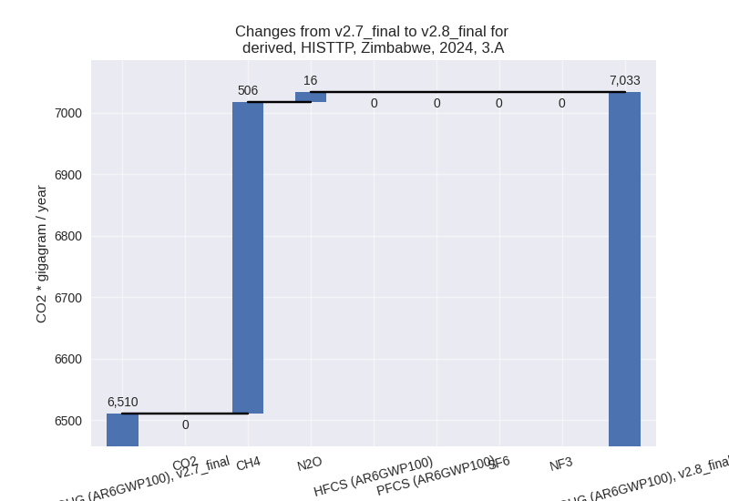
There is no subsector information available in PRIMAP-hist.
- M.AG.ELV: Total sectoral emissions in 2022 are
5676.19 Gg CO2 / year which is 46.1% of category M.AG emissions. 2024
Emissions have changed by -1.5%
(-78.35 Gg CO2 / year). 1990-2024 Emissions have changed by 0.6% (33.12 Gg CO2 / year).
- 4: Total sectoral emissions in 2022 are 2368.25 Gg
CO2 / year which is 7.6% of M.0.EL emissions. 2024 Emissions have
changed by 46.3% (794.10 Gg CO2 /
year). 1990-2024 Emissions have changed by 22.0% (291.64 Gg CO2 / year). For 2024 the
changes per gas
are:
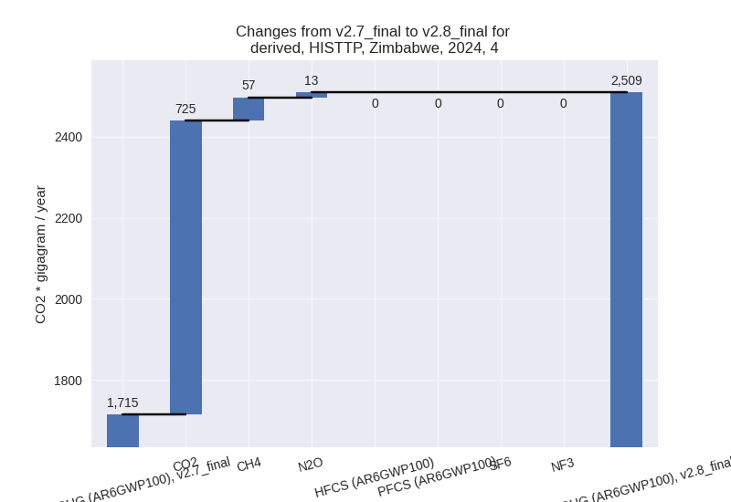
For 1990-2024 the changes per gas
are:
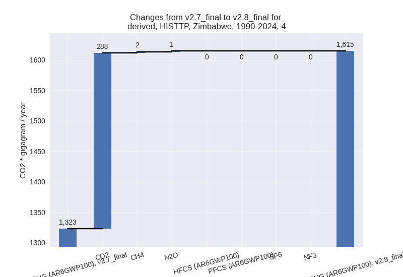
- 5: Total sectoral emissions in 2022 are 231.52 Gg
CO2 / year which is 0.7% of M.0.EL emissions. 2024 Emissions have
changed by -28.6% (-74.83 Gg CO2 /
year). 1990-2024 Emissions have changed by 2.7% (6.93 Gg CO2 / year). For 2024 the
changes per gas
are:
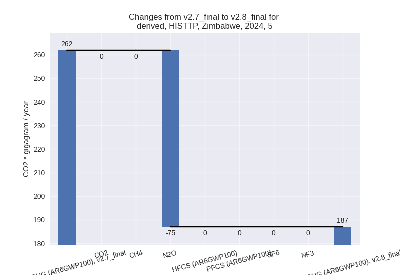
For 1990-2024 the changes per gas
are: